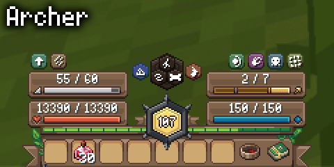

Wynnilla is a collection of Wynntils infoboxes designed to match the style of the "Vanilla" Wynncraft texture pack. The goal is to slot into the default UI as closely as possible while still providing all of the useful information you need for gameplay. For lower-end systems, these overlays can be quite heavy and I would recommend you wait for info box optimizations to release which are currently being worked on.
This is a big project and there is no way for me to test everything myself, so if you have any issues or you have suggestions please let me know in my thread in #function-stock on the Wynntils Discord

Installation Instructions
1. Download and install the texture pack from the Modrinth page:
https://modrinth.com/resourcepack/wynnilla A support patch for WynnEdits Dark Theme is also available, which must be installed over the base texture pack.
2. Open Overlay Management from the Wynntils menu and click "Add Info Box"
3. Copy "Info Box Content" from an overlay below, then paste it into the "Info Box Content" field
4. Copy "Enabled Template" from an overlay below, then paste it into the "Enabled Template" field
5. Set "Text Shadow" to "None"
6. Click "Edit" on "Overlay Position" and move it to the right place, like in the example.
7. On the same screen, click the button to customize rendering order and move this overlay to below "Action Bar"
8. Save your changes
FAQ
How do I make the overlay activate per class?
Use this enabled template instead: and(not(has_no_gui); eq_str(id, "MY_ID"))
Replace MY_ID with the output from the function /function test {id}
How do I hide the vanilla bossbars?
1. Enable the Wynntils built-in overlay for what you want to hide
2. Make sure Display Original Bar Data is disabled
3. Type false into the built-in overlay's Enabled Template
I installed the WynnEdits Dark Mode version but it isn't working
You still need to use the basic Wynnilla resource pack, just layer the dark mode patch above it.
It shows up as some kind of error / long string of code
Update Wynntils
My overlay keeps resetting its position
Yeah, Wynntils is buggy. Just try messing around with different ways to line it up until it works.